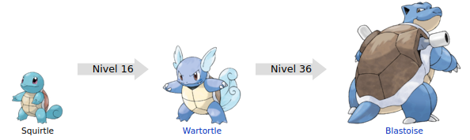

Squirtle
Squirtle (ゼニガメ Zenigame en japonés) es un Pokémon de tipo agua introducido en la primera generación. Es uno de los Pokémon iniciales en la región Kanto, junto a Bulbasaur y Charmander, en las ediciones Pokémon Rojo, Pokémon Verde y Pokémon Azul y Pokémon Rojo Fuego y Pokémon Verde Hoja.
Evoluciones de squirtle

Su nombre proviene de las palabras en inglés squirt (disparar un chorro de agua) y turtle (tortuga).
Su nombre en japonés, Zenigame, es simplemente la palabra japonesa para tortuga de estanque, 銭亀.
Su nombre francés, Carapuce, proviene de las palabras carapace (caparazón) y puce (Pulga, en referencia a su tamaño). Puce también puede ser un término cariñoso, por su apariencia tierna y dulce.
Su nombre alemán, Schiggy, proviene de la palabra schildkröte (tortuga).
Squirtle tiene forma de una tortuga semiacuática de una tonalidad azulada, su caparazón es color café, las placas periféricas de color blanco y finalmente su plastrón de una tonalidad crema, posee una cola con la punta enrollada, además de tres dedos en cada una de sus extremidades, una boca con una punta en forma de pico característico de las tortugas y unos grandes ojos de tonalidad rojiza. Al nacer su espalda se va hinchando hasta formarse un caparazón, al principio es blando y elástico, si lo golpeas este rebotará, pero conforme pasa el tiempo se irá endureciendo para resistir los ataques de cualquier amenaza, ocultándose dentro de él cuando siente peligro, al estar escondido puede lanzar una enorme presión de agua desde su interior cuando tiene la oportunidad. Su caparazón no solo le sirve de protección únicamente, con su forma redondeada y las hendiduras que posee, le sirven para reducir su resistencia en el agua y así poder nadar a enormes velocidades. Además lanzar con gran precisión chorros de agua a presión por la boca, también puede lanzar espuma y usar su duro caparazón para el ataque. Siempre se lo ve cerca de cuerpos de agua, ya sean de agua dulce o salada.
Squirtle tiene forma de una tortuga semiacuática de una tonalidad azulada, su caparazón es color café, las placas periféricas de color blanco y finalmente su plastrón de una tonalidad crema, posee una cola con la punta enrollada, además de tres dedos en cada una de sus extremidades, una boca con una punta en forma de pico característico de las tortugas y unos grandes ojos de tonalidad rojiza. Al nacer su espalda se va hinchando hasta formarse un caparazón, al principio es blando y elástico, si lo golpeas este rebotará, pero conforme pasa el tiempo se irá endureciendo para resistir los ataques de cualquier amenaza, ocultándose dentro de él cuando siente peligro, al estar escondido puede lanzar una enorme presión de agua desde su interior cuando tiene la oportunidad. Su caparazón no solo le sirve de protección únicamente, con su forma redondeada y las hendiduras que posee, le sirven para reducir su resistencia en el agua y así poder nadar a enormes velocidades. Además lanzar con gran precisión chorros de agua a presión por la boca, también puede lanzar espuma y usar su duro caparazón para el ataque. Siempre se lo ve cerca de cuerpos de agua, ya sean de agua dulce o salada.
Página creada por Luis Felipe Restrepo y Daniel Felipe Gutierrez
Información extraida de: Squirtle. (s. f.). WikiDex. Recuperado 5 de noviembre de 2022, de https://www.wikidex.net/wiki/Squirtle